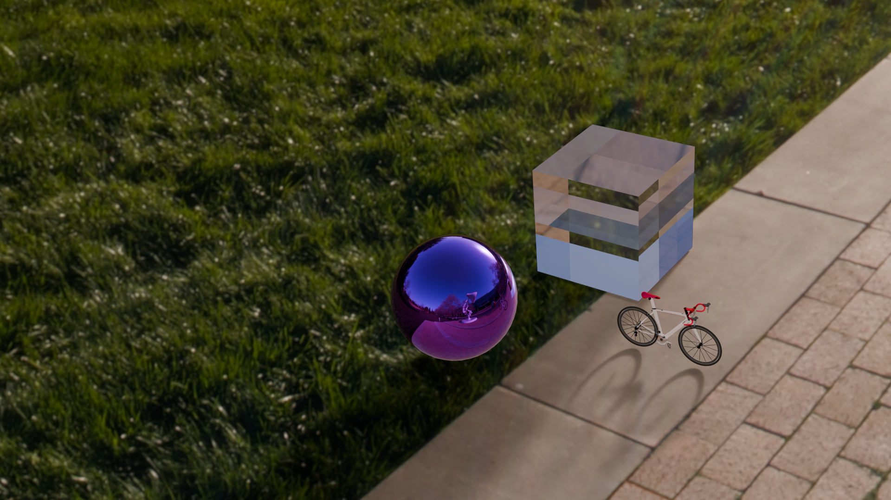

Rendering of a metallic, glossy, colored ball, a transmissive glass cube (IOR 1.5) and an imported triangle mesh that is a bicycle.
The materials were imported by using the .mtl file. Some adjustments had to be made in the materials of the bike, e.g. the roughess had to be adjusted so the bike appeared less transparent than it did when we imported it. We also changed the colors, so the bike appeared white and red.
